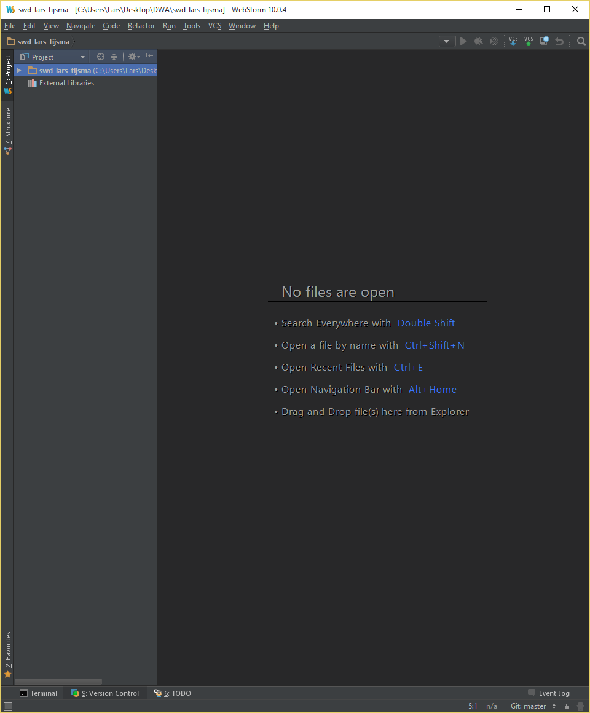
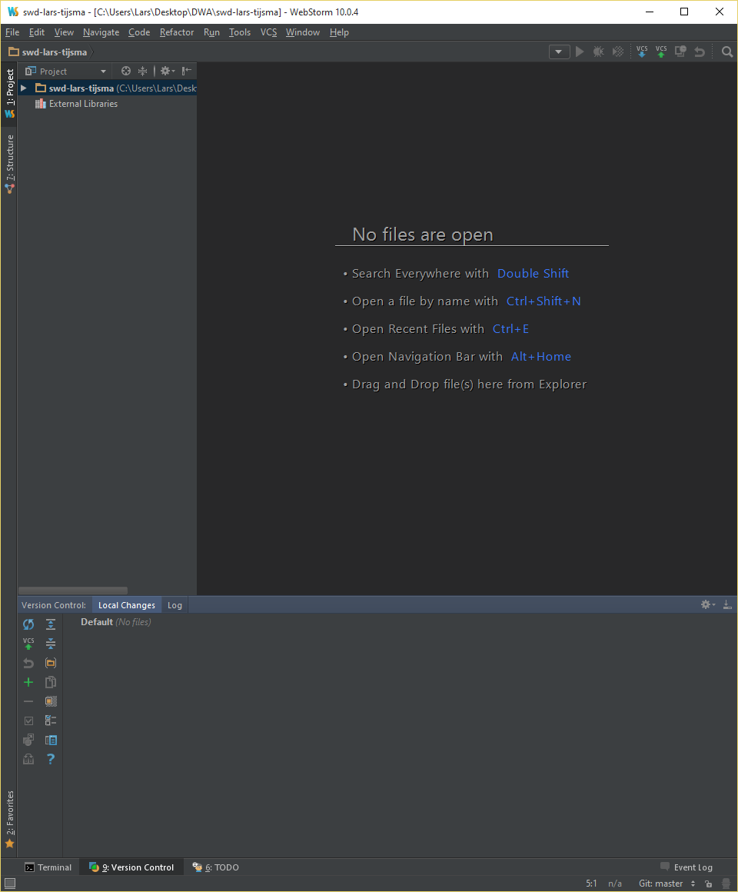

lab 2 Checking Status
Goals
- Learn how to check the status of the repository
Check the status of the repository 01
Execute:
Press the Version Control button.
Output:
You should see
The window shows no files which means that your working directory and your repo are in the same state.